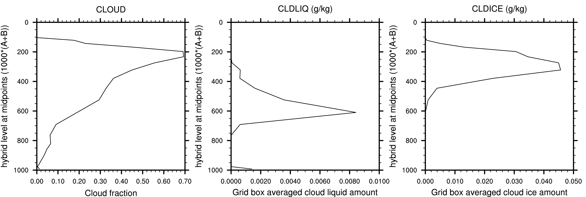

Single Column Atmospheric Model (SCAM)
This page describes how to run the Single Column Atmospheric Model, version 6 (SCAM6). SCAM6 is described in detail in Gettelman et al 2019 and the following instructions are valid for CESM2 and subsequent releases.
SCAM makes use of the comprehensive CAM physics package but is idealized in its representation of the large scale resolved flow. A single column is simulated and the large scale flow and its associated tendencies are prescribed, either from observations or a simulation. This configuration is useful for understanding the behavior of the parameterized physics in the absence of feedbacks involving the large-scale circulation. As such it is useful for parameterization development and the understanding of the behavior of physical processes under the constraint of prescribed large-scale circulation.
CESM2-SCAM6 Containerized Tutorial
We have developed a self-contained version of CESM2 that runs the Single Column Atmosphere Model (SCAM6). This is a full version of CESM2, just configured with input data for a single compset (FSCAM). The container uses Docker, an open source virtualization layer. It is essentially a virtual machine running through the Docker layer. Docker works on any platform: Mac, Windows and Linux. Code and instructions for SCAM are available on a CAM6 Tutorial page.
Full SCAM Setup Instructions
Instructions on setting-up and running SCAM can be found in the CAM6 users guide. The instructions provided here expand upon those and aim at providing a more in-depth description for a new user.
Introduction to SCAM forcing datasets (IOPs)
The forcing datasets that are used to run SCAM are referred to as IOPs (standing for Intensive Observation Periods, referring to the fact that often SCAM is run using observational data obtained from intensive field campaigns). A number of observational IOPs are available within the CESM2 release and users can also generate their own using observational data or a CAM simulation.
The IOP dataset contains the large scale forcings required to run SCAM. Specifically, the zonal and meridional components of the flow (U,V) and the vertical pressure field are read in from the IOP dataset. SCAM then uses the Lagrangian dynamical core to calculate the vertical advection of moisture (Q) and the Eulerian dynamical core to calculate the vertical advection of temperature (T). Alternatively, these vertical advection tendencies can be read in directly from the IOP dataset, if they are available. The vertical advection does not act on any other prognostic variables e.g., aerosols. Given the dependence of the vertical advection terms on the formulations of the Lagrangian and Eulerian dynamical cores and the lack of vertical advection of other prognostic variables, users who aim to run SCAM with an IOP dataset generated from CAM itself should not expect exact bit-for-bit reproducibility of the CAM state but they should find close agreement.
In the presence of this prescribed large-scale atmospheric circulation, SCAM then predicts the evolution of temperature (T), moisture (Q) and other quantities such as cloud and aerosol properties, radiative heating rates, temperature tendencies due to moist processes etc using the CAM physics parameterization suite. It also predicts precipitation rates, but it should be noted that this is strongly constrained by the imposed large scale flow and as such, is essentially also prescribed.
SCAM offers the flexibility for users to decide the extent to which fields are prescribed or prognosed through a variety of namelist parameters that will be discussed in more detail below. For example, a user can choose to prescribe the surface fluxes rather than allow SCAM to prognose them given the large scale state. Or a user can choose to relax the atmospheric T and Q back to a specified state or can choose to replace these prognosed fields with prescribed fields from the IOP. In the default configuration, temperature is prognosed, but relaxed toward that in the IOP file with an e-folding timescale of 10 days at the surface to 2 days at the top of the model to prevent drift in the presence of inconsistencies between the IOP forcing and the model behavior. Users can alter the nature of this relaxation via the namelist.
A realistic distribution of aerosols must be present within SCAM. In the default configuration, the aerosol distribution is initialized from the initial condition file and surface emissions of aerosols for the duration of the simulation are taken from the standard CAM6 aerosol emissions datasets. Typically monthly mean climatologies are used. For example, for the observational IOPs discussed below, the aerosols are initialized using a monthly average aerosol profile for the relevant month at each location derived from the last 2 years of a 3 year present day CAM6 simulation. In the default configuration the aerosol species (mass and number) are relaxed to the initial conditions with the same timescale as the temperature relaxation described above. The stronger relaxation in the upper troposphere is desirable to account for the lack of large scale vertical advection of aerosol species.
Running SCAM with a provided IOP forcing dataset
As described in more detail in Gettelman et al 2019, a number of observational IOPs are provided within CESM2. These IOPs represent a variety of regimes from tropical convection and cirrus cases to Arctic mixed phase cloud cases. Here, instructions for running these in-built IOP cases is provided. In the following it is assumed that the CESM release is located in the directory $CESM.
SCAM is run using the FSCAM compset and the desired IOP forcing is specified through the --user-mods-dir flag in the create_newcase command. Directories containing the namelist settings for the various preconfigured IOP's available in CAM6 are located in the following directory
$CESM/components/cam/cime_config/usermods_dirs/
and are prefixed with "scam_". In these directories are a script containing xml commands that configure the case with the correct start dates, end dates, longitude, latitude etc and a user_nl_cam file that contains the default namelist settings including "iopfile" which points toward the IOP forcing dataset.
For example, the following steps can be used to create and run the arm95 case.
Step 1: Create the case
Run the following command from within $CESM/cime/scripts
./create_newcase --case $CASEDIR --compset FSCAM --res T42_T42 --user-mods-dir ../../components/cam/cime_config/usermods_dirs/scam_arm95
replacing $CASEDIR with the desired location of your case directory.
Step 2: Configure the case
All parameters such as the start date of the simulation, the length of the simulation are set by default. These can be modified at this stage. For example, the default length of the arm95 run is 1259 timesteps. This can be modified to 1000 timesteps with the following command from within $CASEDIR
./xmlchange STOP_N=1000
Take a look at the namelist settings in $CASEDIR/user_nl_cam. Here is an explanation of what you see
scmlon=$PTS_LON# longitude of SCAM simulation. Set in env_run.xml via the shell_commands file in the IOP directory scmlat=$PTS_LAT# as above but for latitude ncdata="$DIN_LOC_ROOT/atm/cam/scam/iop/CESM2.F2000climo.IOP_SITES.cam.i.0003-07-01-00000.nc"# path to IOP forcing dataset iopfile="$DIN_LOC_ROOT/atm/cam/scam/iop/ARM95_4scam.nc"# Path to initial conditions dataset mfilt=1500# 1500 time values will be in each history file nhtfrq=1# history fields are output every timestep co2vmr=368.9e-6# CO2 concentraion scm_use_obs_uv = .true.# If .true. then the IOP u and v values are used scm_relaxation = .true.# If true then relaxation is performed on the fields set by scm_relax_fincl below scm_relax_fincl = 'T', 'bc_a1', 'bc_a4', 'dst_a1', 'dst_a2', 'dst_a3', 'ncl_a1', 'ncl_a2', 'ncl_a3', 'num_a1', 'num_a2', 'num_a3', 'num_a4', 'pom_a1', 'pom_a4', 'so4_a1', 'so4_a2', 'so4_a3', 'soa_a1', 'soa_a2' scm_relax_bot_p = 105000.# Lower bound (in Pa) of the relaxation of fields set by scm_relax_fincl scm_relax_top_p = 200.# Upper bound (in Pa) of the relaxation of fields set by scm_relax_fincl scm_relax_linear = .true.# If true then linear then relaxation timescale is linearly interpolated between the pressure levels. scm_relax_tau_bot_sec = 864000.# timescale (in seconds) of the relaxation at the lower boundary scm_relax_tau_top_sec = 172800.# timescale (in seconds) of the relaxation at the upper boundary
Step 3: Set-up and Build the Case
Set-up and build the case by invoking the following commands within $CASEDIR
./case.setup
./case.build
Step 4: Run the Case
./case.submit
See the CESM users guide for more information on these procedures.
Step 5: Validate the model output
Figure 1 shows the time averaged cloud fraction, cloud liquid amount and cloud ice amount for the arm95 SCAM case using the default settings. This can be reproduced running this NCL script on the output produced by following the above steps (the whole default period of simulation is used, it isn't shortened to 1000 timesteps with the example xmlchange command in Step 2.

Figure 1: Time averaged cloud fraction, cloud liquid amount (g/kg) and cloud ice amount (g/kg) for the arm95 case, using the default settings
More on SCAM namelist settings
Aside from the namelist parameters described in Step 2, the additional namelist parameters below can be used to control SCAM:- scm_cambfb_mode: Used for internal testing of CESM/SCAM
- scm_crm_mode: Column Radiation Mode (CRM) - all parameterizations but radiation disabled - used for radiative equilibrium experiments.
- scm_iop_tg: If TRUE then use surface properties specified in the IOP file
- scm_clubb_iop_name: enables Clubb tuned parameters for an IOP case.
- scm_relax_tau_sec: used in place of scm_relax_tau_bot_sec and scm_relax_tau_top_sec if a constant relaxation timescale is to be used
- scm_use_obs_T: analogous to scm_use_obs_uv in the above example, if set to TRUE then the temperature from the IOP file is prescribed
- scm_use_obs_qv: as above but to specify water vapor at each timestep from the IOP file
- scm_zadv_T: specify the type of vertical advection to be used on T
- scm_zadv_uv: as above but for u and v
- scm_zadv_q: as above but for moisture (q)
- scm_iop_lhflxshflxTg: if TRUE then instead of using model computed values, the surface latent heat flux, sensible heat flux, friction velocity and ground temperature from the IOP file are used
- scm_force_latlon: if TRUE then forces SCAM to use the lat lon fields specified in the namelist, not what is closest to that in the IOP file
See $CESM/components/cam/bld/namelist_files/namelist_definition.xml for defaults and valid values for each of these parameters.
Making your own IOP file from a CAM simulation
Detailed instructions on how to generate your own IOP file from a cam simulation are provided in section 4.2.3.4 of the CAM6 users guide.
...